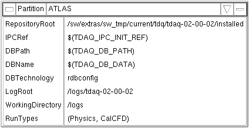

OKS Data Editor
Graphical Window
==== under construction ====
The OKS Data Editor provides a way for graphical representation of
relations between objects. A group of objects have to be described in
special configuration file explaining to the OKS data editor objects of
which classes have to be displayed, what graphical icons and cursors to
use, which relationships and attributes have to be suppressed, which
relationships have dependencies, what to show on top, etc. For example,
below there is typical Partition view accessible via Partition
menu of
Edit menu bar of the main
window:
The popup window appearing in result of right mouse button click in an
object-free area (see above picture) allows to:
- create new object (allowed for given
type of graphical window)
- select objects shown on top
level
- define user graphical preferences
- print contents of window
- sort objects and refresh
Otherwise user can browse and update an object as described in second next section.
Top Level Objects
Browse and Update Objects
Each object can be shown in two states:
- Icon State (compact, no visible attributes)
- Table State (extended, the attributes are visible and can be
modified)
The switch between above states and many other actions on object are
available from popup menu available on right mouse button click when
object is in icon state, or left mouse click on object's table system
button:
Icon State Popup - left. Table State
Popup - right.
|
|
The popup menu allows:
- [Hide] - Remove object from given graphical window. To
restore
object close and open window again or modify [Show on Top]
window configuration.
- [Maximize] - Switch from icon to table state. [Minimize]
- Switch
from table to icon state.
- [Hide Relationships] - Do not show object relationships
(if
shown). [Show Relationships] - Show object relationships (if
not shown).
- [Copy Reference] - Put reference on given object into
editor
clipboard (is the same as select
operation)
- [Link with reference] - Link current object with another
selected
object (if there is a one in editor clipboard).
- [Referenced By] - Show objects referencing given one in
this
window (to get all references use referenced by function of
object window).
- [Contained in] - Show name of file containing given object.
- [Copy] - Copy given object.
- [Rename] - Change unique identity of given object.
- [Modify] - Is the same as [Maximize].
- [Create Child >] - Create new object and link it with
given
one.
- [Delete] - Delete given object.
Object table
When an object is shown as table, one can to browse the attributes,
class name and unique identity, e.g.:

To edit an attribute click left mouse button on it's value. A textfield
box will appear allowing to change the value. If the value cannot be
changed (e.g. object's file is read-only or locked by someone else),
the value will be shown as disabled.
Edit an attribute in text field -
left. Modification is not allowed, the text field box is disabled -
right.
|
|
When modification of a value is finished, to update object press [Tab]
key or slect any other attrubute.
If an attribute has enumeration type, instead of text filed box popup
menu with allowed values appears (to change value select a new value
from the popup). In the attrubute's type is unsigned integer, then it's
value can be
edited in decimal or hexadecimal format (click right mouse button and
select desired format):
Edit enumeration value - left. Select
numeric format to edit unsigned integer value - right.
|
|
Object relationships
Object File
To see which file contains an object select [Contained in] from
object's popup menu, e.g.:
References on Object
To see which objects referencing given object in this window select
[Referenced By] from object's popup menu. The references are
starting
from the window top-level objects and show relationship names and
intermediate objects, e.g.:
Note, to get list of all references from loaded database use referenced by function of
object window.
Create New Object
Select database file for new object and create
Relationship Objects
Create new object and link with existing one
Delete Object
Window Properties
The properties window allows to set fond, various distances, layouts,
etc.:
Print Window
The print window allows to print current window into encapsulated
PostScript file, to save as mif file for future import to Adobe
Frame
Maker, or to send to printer.
Create Configuration for New View
How to create OKS config file for data editor and add to the editor
configuration.
Home - Next
- Index
Modified 12-JUN-2009
Author Igor Soloviev